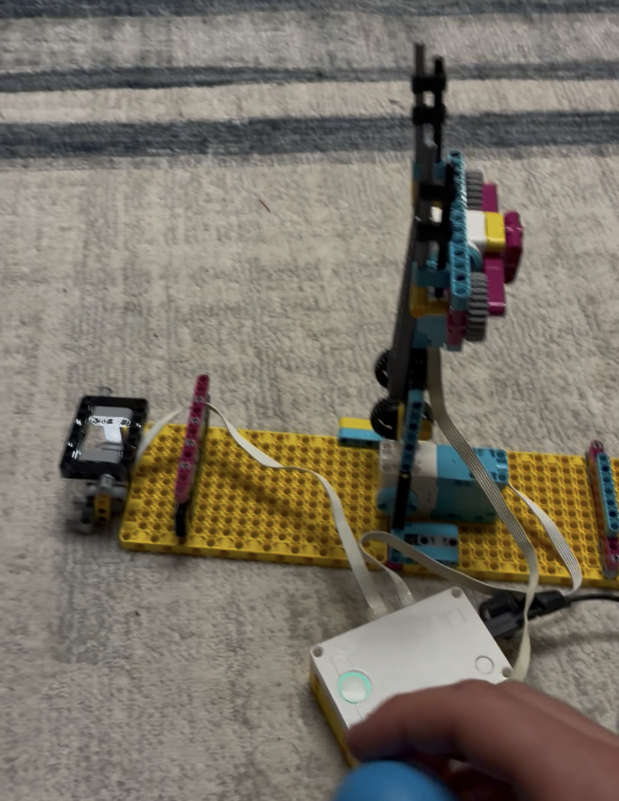
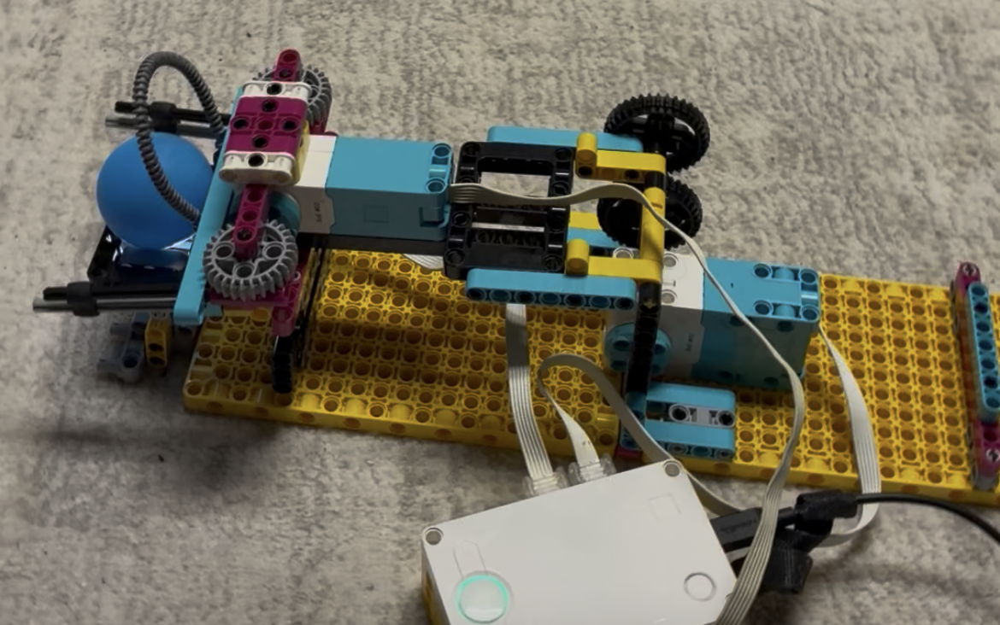

For this project, the task was simple: pass a ball down a chain. The only catch is that we had to make it modular and connect to others' designs. I am happy to report that my arm preformed perfectly and always ensured the ball made it from my starting point to the next in line's station where they successfully moved the ball as well. However, I am unhappy to report that the-person-prior-to-me's arm consistently flung the arm out into space instead of onto my station. :(

Here are a couple of the early designs I made. You can see that I added the long flexible pipe since I needed a piece to just barely hold the rubber grips out, so the flexibility of the piece came in handy.
